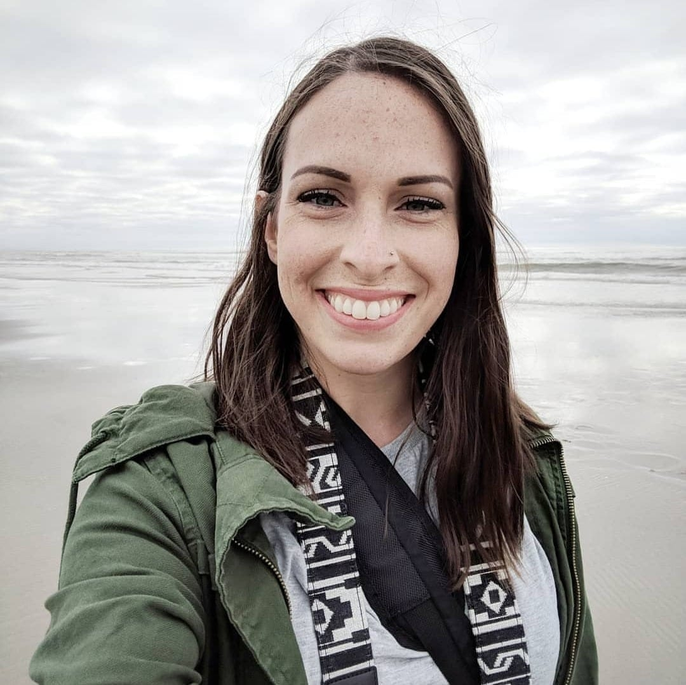

ABOUT ME
I grew up in Riverton, Utah, but currently reside in Vineyard, Utah. I've been interested in coding for a few years now, and I'm finally trying my hand and taking a coding course from the University of Utah.
I'm the mother of the two best little boys I know who are my world. I like to practice photography, go hiking, cook and bake, read books, and listen to podcasts. My favorite color is usually green, and I prefer cats over dogs.
I'm looking forward to building my resume and gaining experience with many devloper languages as I study to become a web developer.